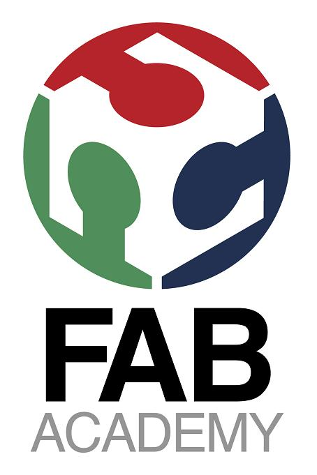

Applications and Implications
This week lecture is to answer some question about our final project
Question 1:
What will it do?
The main features that my project is intended to do is open the draw where the item you searching for is placed. This will help when you have a lot of item in a drawers and you not use it frequently, or is used by many different people that don't have enough time to learn where the item are placed or will waste a lot of time reading all the name on the draws.
A lot of software features can be added like remote control from a smartphone or a item finish alert and so on.
Question 2:
Who's done what beforehand?
this project take inspiration from the big robotic storage used in the industry, like Amazon, aliexpress and so on.
They receive the order from the web, and then the order is processed only by robot who read the barcode and prepare the box for the shipping.
I see on-line someone try to make this smaller but mine will be made at low cost price for the maximum usability and to be easy to make.
Question 3:
What materials and components will be required?
For make it low cost I will use common material that can be find in local hardware shop or cheap online store:
Structural materials: wood frame (mdf is more cheap than plywood), or acrylic ( a little bit more expensive),bearing (replecable by 3d printed), 3d printed structure, belt, pulley, aluminium rod.
Electronics equipment: an Arduino like board (atmega328p), stepper driver, endstop, stepper motor, actuators
Firmware: a sort of grbl used for cnc machine that can provide xy coordinates control
software: a database of item
this is more or less the components and material i need.
Question 4:
Where will they come from?
electronic is produces in the OpenDot fablab, components and motor are from china,the wood and other stuff like rod and so on are from a local harware shop. 3d printed part are from my printer and pla or abs are from the company i work for here in Milan Filoalfa.
Question 5:
How much will it cost?
I concentrate to make is low cost and scalable.
this make the 2 different type of cost: the fixed ones is the electronic part ( don't change whit the dimension of the drawers stage, made of motor electronic board, driver and actuators), that is around 80€ I think ( worst case), but i try to keep it lower; an then the frame and movement system that can be escalated for the need,( in my case i make a small prototype only for testing so it will be less) that can be from 10 to 30€.
Question 6:
What parts and systems will be made?
i will made the following things:
-frame
-moving system
-actuator part
-electronic board
-stepper driver
-drive belt
-software for research item and communicate whit electronics
Question 7:
What processes will be used?
I think I have a lot of process involved
laser engraving pcbs
soldering and testing pcbs
laser cutting the frame (or maybe for more large building using the cnc milling machine)
3D printing mechanics and support for the moving part
embedded electronic programming
software programming and developing
Question 8:
What tasks need to be completed?
for now i have a lot of experience in this king of building and a nice background of moving system,
but in this project for now i need to do all the things.
Question 9:
What questions need to be answered?
how build it low cost and what task implement.
Question 10:
What is the schedule?
i'm a little busy whit my sister marriage in this period( she will marry on 24/05/2015) so i will update this section as soon i get back my time to spend on this project
Question 11:
How will it be evaluated?
the evaluation will be made by the user experience from the people who will try it in the lab,
the most simple task where be open a draw after a research of the object.